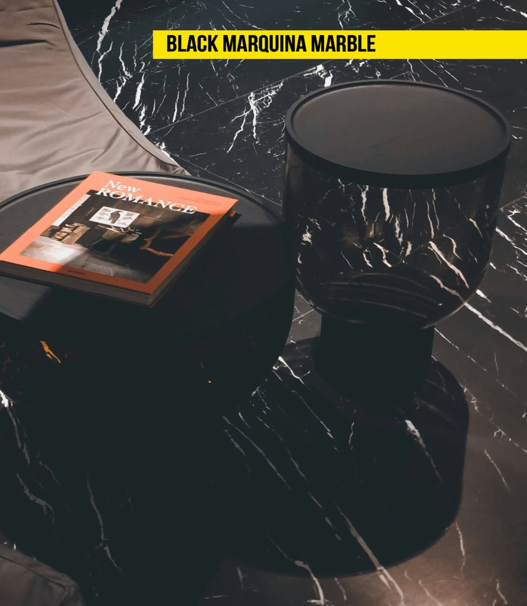
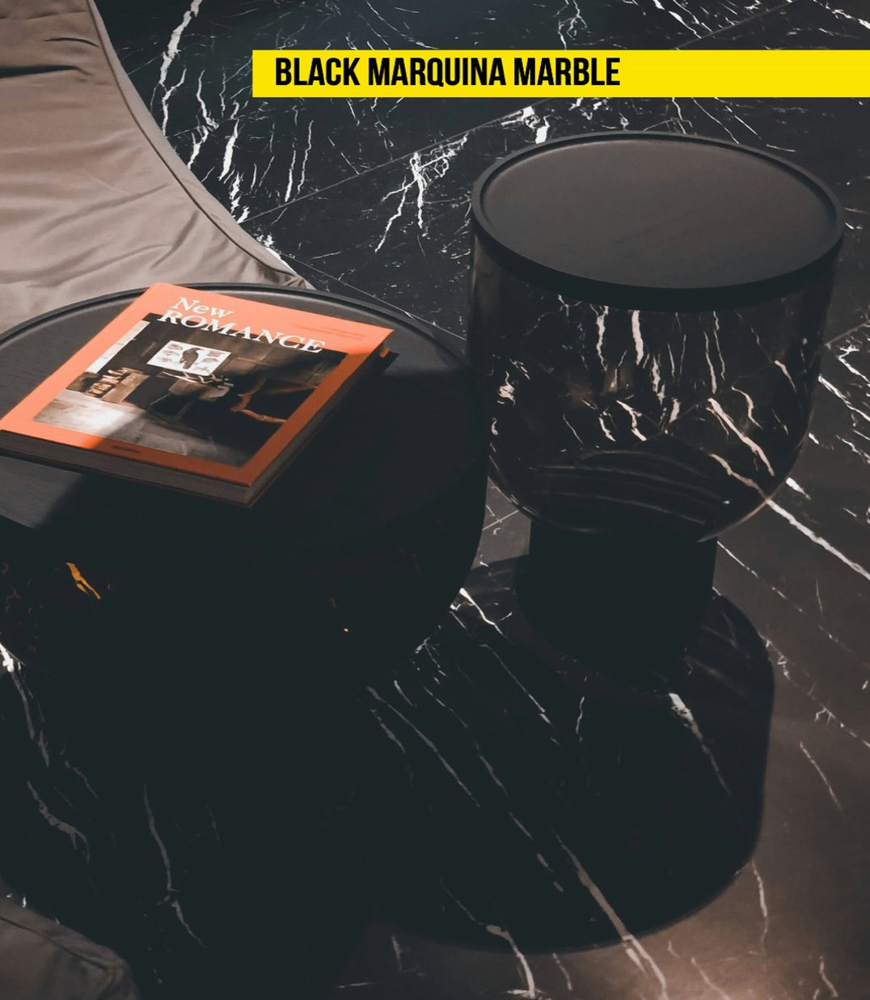

معلومات عنا
من نحن تأسست سيلكستون في عام 2014 بهدف تصدير الرخام والترافرتين والكوارتز والحرف اليدوية أساسًا في الحفاظ على الحرف اليدوية الفارسية الغنية. خبرتنا في الصناعة أعطتنا المعرفة بحاجات العملاء. نحن نسعى دائمًا لتقديم منتجات عالية الجودة وخدمة عملاء عالمية المستوى لعملائنا. تمثل سيلكستون مواد عالية الجودة وخدمة ممتازة وتسليم في الوقت المحدد. خدماتنا تشمل فحص جميع المواد (الحدود، الملامح، الألواح والكتل)

وصف
مهمة مهمتنا هي تحقيق توقعات عملائنا على أعلى مستوى من خلال تطوير جودة منتجاتنا وخدماتنا بشكل مستمر وبناء روابط عاطفية قوية لتوليد ولاء العملاء.
المميزات
رؤية رؤيتنا هي أن نصبح شركة رائدة وجديرة بالثقة تزيد إنتاجيتها وكفاءتها الصناعية بشكل مستمر في السوق العالمي.

 

وصف
- نوع المواد: رخام
- اللون الرئيسي: أسود
- الانتهاء السطحي: مصقول
- تفاصيل التعبئة والتغليف: حسب طلب العميل
رخام بلاك ماركوينا هو من بين أحدث وأكثر الأحجار العملية استخدامًا في مختلف أجزاء المباني والحمامات. هذا النوع من الرخام له خلفية سوداء مع خطوط بيضاء. إنه المادة المفضلة للمصممين المحترفين للتصاميم الأنيقة والخاصة.
المميزات
ألوان داكنة فريدة نسبة امتصاص الماء منخفضة بسبب التعبئة الجيدة قابلية عالية للتلميع بسبب الكثافة العالية شفافية متميزة

وصف
- المادة: الرخام
- اللون الرئيسي: رمادي داكن
- تشطيب السطح: مصقول
- تفاصيل التعبئة والتغليف حسب طلب العميل
الرخام الرمادي المشمس هو خيار مثالي للمساحات الداخلية والخارجية التي تسعى إلى التمييز اللطيف من خلال درجات اللون الهادئة والمميزة. اختيار هذا المواد يعبر عن ذوق لإعادة تفسير المفاهيم التقليدية وتزويدها بلغة أكثر معاصرة وتكيفها مع مجموعة لونية متميزة ولكن في الوقت نفسه كوزموبوليتان تشمل درجات اللون اللؤلؤية، الرمادي الأصفر، والفضي. الرخام الرمادي قادر على تحديد الاتجاهات والموضة.
المميزات
- قابلية عالية للتصقل العالي بسبب الكثافة العالية - شفافية استثنائية

الوصف
- اللون الرئيسي: رمادي
- اللمسة السطحية: مصقولة
- تفاصيل التعبئة والتغليف وفقًا لطلب العميل
إذا كنت تبحث عن حجر طبيعي يعزز الهدوء ويضف أناقة إلى البيئات، فإن رخام كريستال الرمادي هو الخيار. تعزز هذا الرخام الرمادي الخصائص النيوترالية والتنوع، مما يجعله حليفًا جيدًا للمهندسين المعماريين ومصممي الديكور الداخلي، مما يتيح لهم إبداع مساحات بأنماط مختلفة. من الناحية البصرية، يتميز كريستال الرمادي بلون رمادي مع خطوط بيضاء ورمادية تمتد بشكل غير منتظم عبر سطح الرخام بأكمله. إمكانيات توافق كريستال الرمادي مع مواد أخرى لا حصر لها
الميزات
- ألوان رمادية فريدة - نسبة امتصاص الماء منخفضة بسبب الكثافة - إمكانية تلميع عالية بفضل الكثافة العالية - شفافية ممتازة

وصف
- المواد: رخام
- اللون الرئيسي: بيج
- التشطيب السطحي: مصقول
- تفاصيل التعبئة والتغليف وفقًا لطلب العميل
رخام الدبلوماسي هو واحد من أصلع الصخور البنائية الأكثر صلابة في العالم، وهو لون جميل لا يُقارن بأي لون آخر، وسهل الجمع بينه وبين أي نوع آخر من المواد. تعود هذه الجودة إلى لونه الناعم، الذي يستطيع أيضًا نقل الدفء والراحة إلى البيئات. لا يتردد المهندسون المعماريون ومصممو الديكور الداخلي في استخدام هذا الحجر الطبيعي عند إنشاء بيئات ترحيبية ذات جمال كبير، خاصةً عند البحث عن أماكن تمتاز بالطابع الإثني أو الاستعماري
المميزات
- ألوان زيتونية وبيج فريدة - نسبة امتصاص الماء منخفضة بسبب الكثافة - إمكانية تصفيح عالية بفضل الكثافة العالية - شفافية ممتازة

وصف
- وصف المادة: رخام
- اللون الرئيسي: بني
- الانتهاء السطحي: مصقول
- تفاصيل التعبئة: حسب طلب العميل
الحديث عن رخام مارفيل يعني الحديث عن التصميم والهندسة المعمارية والديكور، ولهذا السبب، يستخدم أشهر المهندسين المعماريين ومصممي الديكور في العالم هذه المادة القيمة لإنشاء مشاريع لا تحصى. على مر السنين، استطاعت الطبيعة أن تخلق مادة جميلة وفريدة تُعرف بـ
الميزات
- نسبة امتصاص الماء منخفضة بسبب الكثافة - إمكانية تلميع عالية بفضل كثافتها - شفافية متميزة
الوصف
- المواد: ترافيرتين
- اللون الرئيسي: بيج / بني
- SURFACE FINISH: POLISHED
- التشطيب السطحي: مصقول تفاصيل التعبئة والتغليف تعتمد على طلب العميل
تصميم يحمل علامات الزمن، صخرة أيونية تتميز بأناقتها التي تنبع من حركة المياه الرقيقة والتدريجية على مر السنين. تيرافرتين تيفولي مثالي بشكل خاص لتطبيقات الجدران والأرضيات الخارجية والداخلية، وتغطية حمامات السباحة والجدران ومشاريع التصميم الأخرى. يمكن معالجة تيرافرتين تيفولي إلى تشطيب مصقول أو تقطيع مشطوف أو سطح صلب أو مسنن أو مشطوب بالحجارة وما إلى ذلك
الميزات
ألوان فريدة - نسبة امتصاص الماء منخفضة بسبب الكثافة - إمكانية التلميع العالية بسبب الكثافة العالية - شفافية متميزة

الوصف
- المادة: رخام
- اللون الرئيسي: أبيض
- التشطيب السطحي: مصقول
- تفاصيل التعبئة والتغليف: حسب طلب العميل
رخام بيانكو نظرًا لتوافره المحدود والطلب العالي عليه من جميع أنحاء العالم، مما يجعله قيمًا جدًا بفضل خصائصه الاستثنائية من التوريق الدرامي. إنه شديد الشهرة بين مصممي الديكور وأصحاب المنازل بسبب مقاومته الجيدة للضغط، ووريقاته الفريدة، وتصفيحه العالي. يمكن لرخام بيانكو الرائع أن ينتج جدران دش من الرخام جميلة، وبلاط الأرضيات، وأسطح المطابخ من الرخام، ومنتجات تصميم أخرى.
الميزات
نمط فريد - نسبة امتصاص الماء المنخفضة بسبب الكثافة - إمكانية تصقيل عالية بسبب الكثافة العالية - شفافية متميزة.